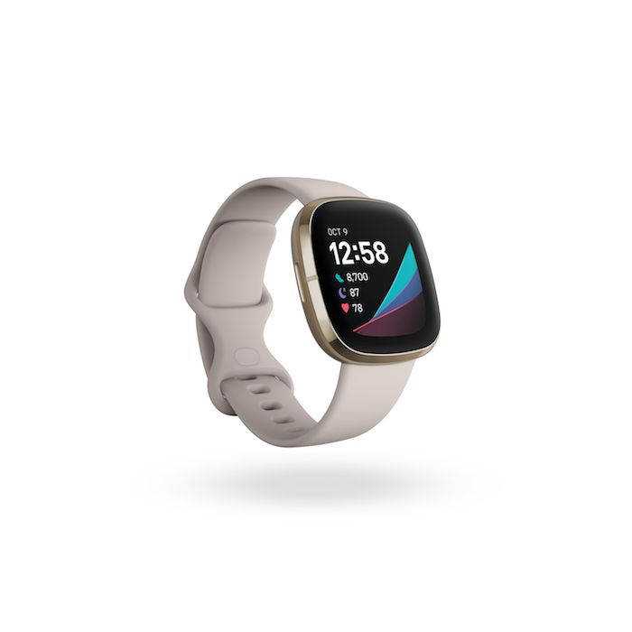

Wide range of devices for all pockets
We only feature the best
APPLE WATCH SERIES 6
Get for Ksh. 49,999


FITBIT SENSE
Get for Ksh. 25,999
APPLE WATCH SE
Get for Ksh. 24,999
FITBIT VERSA 3
Get for Ksh. 19,499
GARMIN VIVO-ACTIVE 3
Get for Ksh. 35,499